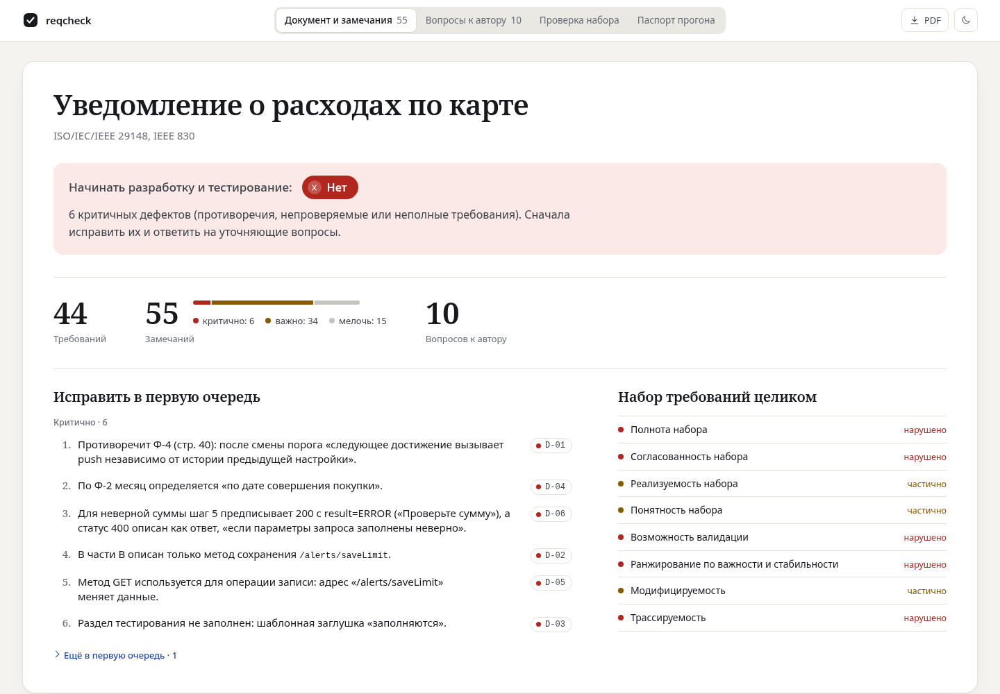

Противоречия, неоднозначности, непроверяемые формулировки и пропуски в ТЗ. Их надо найти до того, как по ТЗ начнут писать код и тесты.
Одна команда: на входе ТЗ, на выходе отчёт с цитатами и номерами строк, вопросы автору с вариантами и перепроверка после ответов.
Кому вопрос, 2-3 варианта (у 7 из 10 с тестом), рекомендация и какие замечания она закроет. Роль Reconciler подгоняет исправления замечаний под рекомендацию.
Ответ, новая формулировка с критериями «Дано, Когда, Тогда», перепроверка, отчёт о разнице: закрыто, осталось, появилось.
3 документа с разметкой, строгая ручная проверка, стресс-набор из 8 документов с ловушками, абляция, тест на подгонку.
Ответы модели лежат в .cache/llm. Повтор отчёта: 0 запросов к модели, тот же результат.
Каждую цитату модели код ищет в документе и сам ставит номер строки. Близкую заменяет строкой документа, ненайденную выбрасывает. Отчёт в md, pdf, json и html.
Отчёт по выданному ТЗ: 44 требования, 55 замечаний, из них 6 критичных, 10 вопросов автору. Вердикт: «Нет».
Оценка, не замер: вручную 0.3-2.3 ч и больше (730-21 800 ₸, нормы Porter, Wiegers, Gilb), агент около 1 110 ₸. Дефект, найденный только на тестах, в 21-78 раз дороже (NASA, 2004).
«На карту приходится максимум один такой push за календарный месяц»строка 39
«следующее достижение вызывает push независимо от истории предыдущей настройки»строка 40
Если push уже отправлен, а клиент поднял порог, по Ф-4 будет второй push в месяце, что запрещено Ф-3.
Push в месяце уже отправлен, клиент повысил порог, и расходы достигли нового порога. Отправляется ли второй push в том же месяце?
Рекомендация: Вариант (б), он сохраняет смысл Ф-4 и не даёт лишнего push при сохранении того же порога.

report.html рядом с md, pdf и json.--answers файл.toml или --interactive: буква варианта, рекомендация агента или свой текст.
Переписанное требование и критерии приёмки «Дано, Когда, Тогда».
Auditor и CrossChecker проверяют переписанные и соседние требования.
Что закрыто, что осталось и почему, что появилось из-за самих ответов.
10 ответов, переписано 25 требований. Закрыто 8 из 21 связанного замечания, в том числе критичные D-04, D-05 и D-06. Критичных на изменённых требованиях было 5, стало 3. Появилось 13 новых: например, критичное N-70, по R-06 расходы растут при авторизации, а по R-09 при проведении. Это видно до разработки.
| На нашей разметке, claude-opus-5-5 | Конвейер v1.6 | Один промпт |
|---|---|---|
| Выданное ТЗ, найдено по score.py / строго | 40/40 / 39/40 | 36 и 35 / 36 и 34 из 40 |
| Выданное ТЗ, обязательные по score.py | 13/13 | 12/13 и 13/13 |
| Выданное ТЗ, точность по score.py | 89% | 93% и 97% |
| autotopup: найдено / обязательные | 18/18 / 8/8 | 18/18 / 8/8 |
| cashback: найдено / обязательные | 20/20 / 9/9 | 19/20 / 8/9 |
| Вопросы с вариантами, цикл ответов | да | нет |
| Выданное ТЗ, вызовов модели / цена по токенам | 9 / около $2.4 | 1 / $0.34 и $0.26 |
criteria.toml, из него собираются промпты.$ git clone https://github.com/l9kk/reqcheck $ cd reqcheck $ pip install -r requirements.txt $ python -m reqcheck input/requirements.md \ -o out/report.md
Без ключа: повтор отчёта из кэша, 0 запросов к модели. Свой документ: ключ Anthropic или бесплатный Gemini в .env.